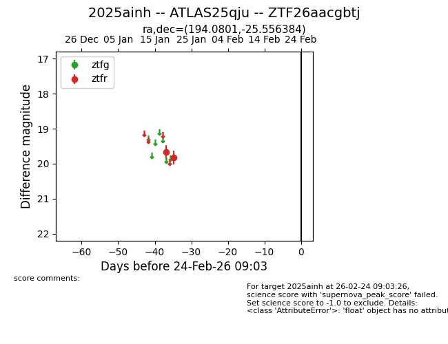
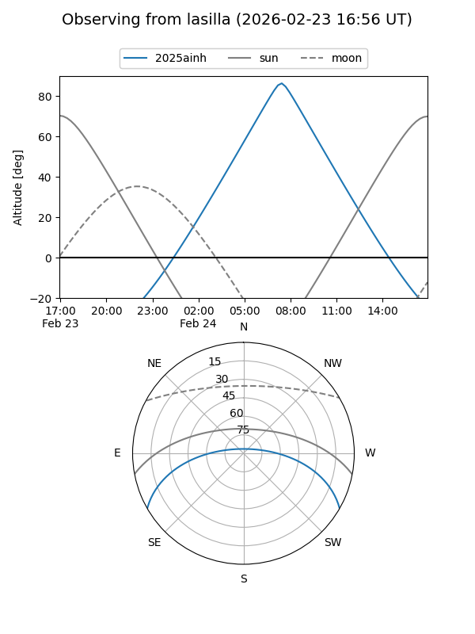
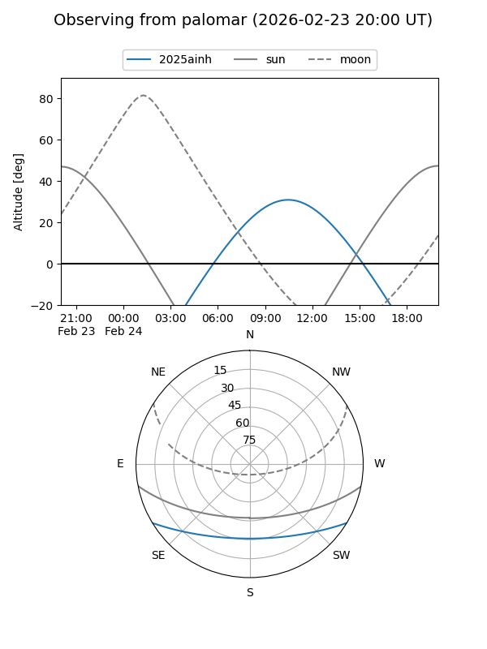

2025ainh
Target 2025ainh at 2026-01-20 21:21
Aliases and brokers:
FINK: link
Lasair: link
ALeRCE: link
TNS: link
YSE: link
alt names
ZTF26aacgbtj (ztf,fink_ztf)
2025ainh (tns,yse)
ATLAS25qju (atlas)
Coordinates:
equatorial (ra, dec) = 194.0801,-25.55638
equatorial (HMS+DMS) = 12:56:19.22,-25:33:22.98
galactic (l, b) = (304.3163,+37.30224)
Flags:
Photometry:
last ztfr=19.83
2 ztfr detections
Lightcurve

Visibility


Additional plots